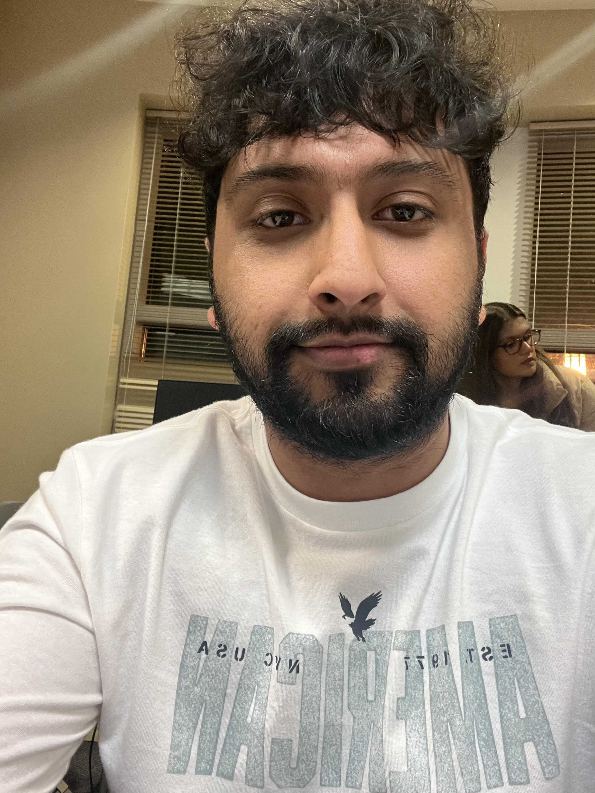

Taking a selfie in my Human-Centered Design Course
Personal Background: I grew up in a country where technology isn't advanced but when I was 15 years old, I moved to the USA. Since then I've been fascinated by technology and would like to satisfy my curiosity.
Professional Background: I am a manager at CLT International Airport Valet Parking.
Academic Background: My major is Computer Science and my concentration is Software Engineering.
Background in this Subject: No background in this subject.
Primary Computer Platform: Windows
Courses I'm Taking & Why:
ITIS 3135: Web-based Application Design and Development: Requirement for my major.
ITSC 2181: Introduction to Computer Systems: Requirement for the major.
ITSC 3160: Database Design and Implementation: Requirement for my major.
ITSC 2214 - Data Structure and Algorithms: This is a requirement for my major and to have a better understanding of algorithms.
Funny/Interesting Item to Remember me by: I like cars.
I'd also like to Share: I love technology and would like to contribute to the advancement of it.